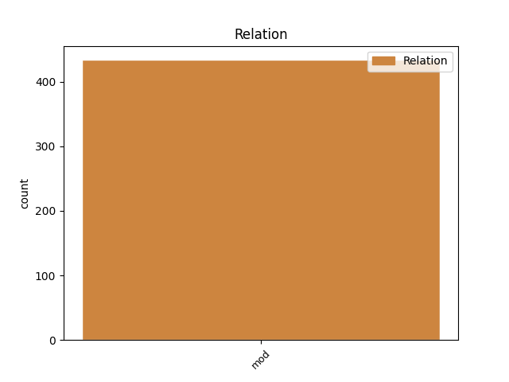

Distribution of features within this leaf

Agreement Rules sorted by frequency.
- When the dependent token is the modifer(mod) of the head token, and the dependent token is ADJ.
1 tè tè NOUN Ncsfn Case=Nom|Gender=Fem|Number=Sing 0 _ _ _
2 ghoirid goirid ADJ Aq-sfn Case=Nom|Gender=Fem|Number=Sing 1 mod _ _
3 gu _ _ _ _ 0 _ _ _
4 Dalgleish _ _ _ _ 0 _ _ _
1 Bha _ _ _ _ 0 _ _ _
2 esan e PRON Pp3sm-e Gender=Masc|Number=Sing|Person=3|PronType=Emp 0 _ _ _
3 e e PRON Pp3sm Gender=Masc|Number=Sing|Person=3 2 mod _ _
4 fhèin _ _ _ _ 0 _ _ _
5 air _ _ _ _ 0 _ _ _
6 a _ _ _ _ 0 _ _ _
7 bhean _ _ _ _ 0 _ _ _
8 a _ _ _ _ 0 _ _ _
9 chall _ _ _ _ 0 _ _ _
10 o _ _ _ _ 0 _ _ _
11 chionn _ _ _ _ 0 _ _ _
12 corra _ _ _ _ 0 _ _ _
13 bhliadhna _ _ _ _ 0 _ _ _
14 agus _ _ _ _ 0 _ _ _
15 a' _ _ _ _ 0 _ _ _
16 fuireach _ _ _ _ 0 _ _ _
17 còmhla _ _ _ _ 0 _ _ _
18 ri _ _ _ _ 0 _ _ _
19 mac _ _ _ _ 0 _ _ _
20 dha _ _ _ _ 0 _ _ _
21 , _ _ _ _ 0 _ _ _
22 dìreach _ _ _ _ 0 _ _ _
23 mar _ _ _ _ 0 _ _ _
24 a _ _ _ _ 0 _ _ _
25 bha _ _ _ _ 0 _ _ _
26 Eachann _ _ _ _ 0 _ _ _
27 còmhla _ _ _ _ 0 _ _ _
28 ri _ _ _ _ 0 _ _ _
29 nighean _ _ _ _ 0 _ _ _
30 . _ _ _ _ 0 _ _ _
Disagree Examples:
1 Gabhaidh _ _ _ _ 0 _ _ _
2 ceallan ceall NOUN Ncpmn Case=Nom|Gender=Masc|Number=Plur 0 _ _ _
3 dearg-fhuileach dearg-fhuileach ADJ Aq-smn Case=Nom|Gender=Masc|Number=Sing 2 mod _ _
4 mhic-an-duine _ _ _ _ 0 _ _ _
5 an _ _ _ _ 0 _ _ _
6 dealachadh _ _ _ _ 0 _ _ _
7 bho _ _ _ _ 0 _ _ _
8 chéile _ _ _ _ 0 _ _ _
9 a _ _ _ _ 0 _ _ _
10 rèir _ _ _ _ 0 _ _ _
11 nàdur _ _ _ _ 0 _ _ _
12 nan _ _ _ _ 0 _ _ _
13 stuthan _ _ _ _ 0 _ _ _
14 a _ _ _ _ 0 _ _ _
15 tha _ _ _ _ 0 _ _ _
16 iad _ _ _ _ 0 _ _ _
17 a' _ _ _ _ 0 _ _ _
18 giùlain _ _ _ _ 0 _ _ _
19 air _ _ _ _ 0 _ _ _
20 an _ _ _ _ 0 _ _ _
21 uachdair _ _ _ _ 0 _ _ _
22 , _ _ _ _ 0 _ _ _
23 agus _ _ _ _ 0 _ _ _
24 a _ _ _ _ 0 _ _ _
25 chionn _ _ _ _ 0 _ _ _
26 's _ _ _ _ 0 _ _ _
27 gu _ _ _ _ 0 _ _ _
28 bheil _ _ _ _ 0 _ _ _
29 e _ _ _ _ 0 _ _ _
30 meadhonach _ _ _ _ 0 _ _ _
31 furasda _ _ _ _ 0 _ _ _
32 sampall _ _ _ _ 0 _ _ _
33 a _ _ _ _ 0 _ _ _
34 ghabhail _ _ _ _ 0 _ _ _
35 de _ _ _ _ 0 _ _ _
36 fhuil _ _ _ _ 0 _ _ _
37 mhóran _ _ _ _ 0 _ _ _
38 dhaoine _ _ _ _ 0 _ _ _
39 ann _ _ _ _ 0 _ _ _
40 an _ _ _ _ 0 _ _ _
41 sluaghan _ _ _ _ 0 _ _ _
42 fa-leth _ _ _ _ 0 _ _ _
43 , _ _ _ _ 0 _ _ _
44 chaidh _ _ _ _ 0 _ _ _
45 móran _ _ _ _ 0 _ _ _
46 de _ _ _ _ 0 _ _ _
47 rannsachadh _ _ _ _ 0 _ _ _
48 a _ _ _ _ 0 _ _ _
49 dhèanamh _ _ _ _ 0 _ _ _
50 air _ _ _ _ 0 _ _ _
51 tricead _ _ _ _ 0 _ _ _
52 gineachan _ _ _ _ 0 _ _ _
53 nan _ _ _ _ 0 _ _ _
54 seòrsachan _ _ _ _ 0 _ _ _
55 fala _ _ _ _ 0 _ _ _
56 a _ _ _ _ 0 _ _ _
57 tha _ _ _ _ 0 _ _ _
58 aig _ _ _ _ 0 _ _ _
59 mac-an-duine _ _ _ _ 0 _ _ _
60 . _ _ _ _ 0 _ _ _
1 Tha _ _ _ _ 0 _ _ _
2 ochd _ _ _ _ 0 _ _ _
3 seòrsaichean seòrsa NOUN Ncpmn Case=Nom|Gender=Masc|Number=Plur 0 _ _ _
4 eile eile ADJ Aq-smn Case=Nom|Gender=Masc|Number=Sing 3 mod _ _
5 a' _ _ _ _ 0 _ _ _
6 faighinn _ _ _ _ 0 _ _ _
7 ainm _ _ _ _ 0 _ _ _
8 agus _ _ _ _ 0 _ _ _
9 còmhdach _ _ _ _ 0 _ _ _
10 as _ _ _ _ 0 _ _ _
11 ùr _ _ _ _ 0 _ _ _
12 . _ _ _ _ 0 _ _ _
1 Tha _ _ _ _ 0 _ _ _
2 companaidh _ _ _ _ 0 _ _ _
3 dhrugaichean druga NOUN Ncpmg Case=Gen|Gender=Masc|Number=Plur 0 _ _ _
4 Ameireaganach ameireaganach ADJ Aq-sfn Case=Nom|Gender=Fem|Number=Sing 3 mod _ _
5 dol _ _ _ _ 0 _ _ _
6 a _ _ _ _ 0 _ _ _
7 dhùblachadh _ _ _ _ 0 _ _ _
8 àireamh _ _ _ _ 0 _ _ _
9 an _ _ _ _ 0 _ _ _
10 luchd _ _ _ _ 0 _ _ _
11 obrach _ _ _ _ 0 _ _ _
12 ann _ _ _ _ 0 _ _ _
13 an _ _ _ _ 0 _ _ _
14 Alba _ _ _ _ 0 _ _ _
15 , _ _ _ _ 0 _ _ _
16 le _ _ _ _ 0 _ _ _
17 bhith _ _ _ _ 0 _ _ _
18 stèidheachadh _ _ _ _ 0 _ _ _
19 mìle _ _ _ _ 0 _ _ _
20 cosnadh _ _ _ _ 0 _ _ _
21 as _ _ _ _ 0 _ _ _
22 ùr _ _ _ _ 0 _ _ _
23 . _ _ _ _ 0 _ _ _
1 Rugadh _ _ _ _ 0 _ _ _
2 's _ _ _ _ 0 _ _ _
3 thogadh _ _ _ _ 0 _ _ _
4 Catrìona _ _ _ _ 0 _ _ _
5 Wylie _ _ _ _ 0 _ _ _
6 san _ _ _ _ 0 _ _ _
7 Òban _ _ _ _ 0 _ _ _
8 , _ _ _ _ 0 _ _ _
9 agus _ _ _ _ 0 _ _ _
10 coltach _ _ _ _ 0 _ _ _
11 ri _ _ _ _ 0 _ _ _
12 mòran _ _ _ _ 0 _ _ _
13 Chaitligich caitligeach NOUN Ncpmg Case=Gen|Gender=Masc|Number=Plur 0 _ _ _
14 eile eile ADJ Aq-smg Case=Gen|Gender=Masc|Number=Sing 13 mod _ _
15 san _ _ _ _ 0 _ _ _
16 sgìre _ _ _ _ 0 _ _ _
17 , _ _ _ _ 0 _ _ _
18 sann _ _ _ _ 0 _ _ _
19 ás _ _ _ _ 0 _ _ _
20 na _ _ _ _ 0 _ _ _
21 h-eileanan _ _ _ _ 0 _ _ _
22 a _ _ _ _ 0 _ _ _
23 thàinig _ _ _ _ 0 _ _ _
24 a _ _ _ _ 0 _ _ _
25 pàrantan _ _ _ _ 0 _ _ _
26 . _ _ _ _ 0 _ _ _